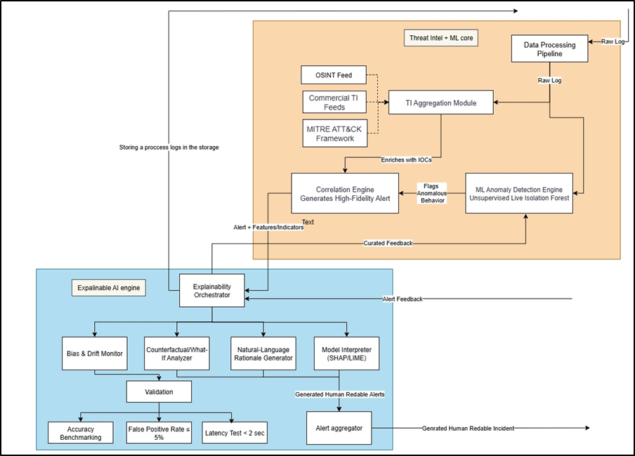
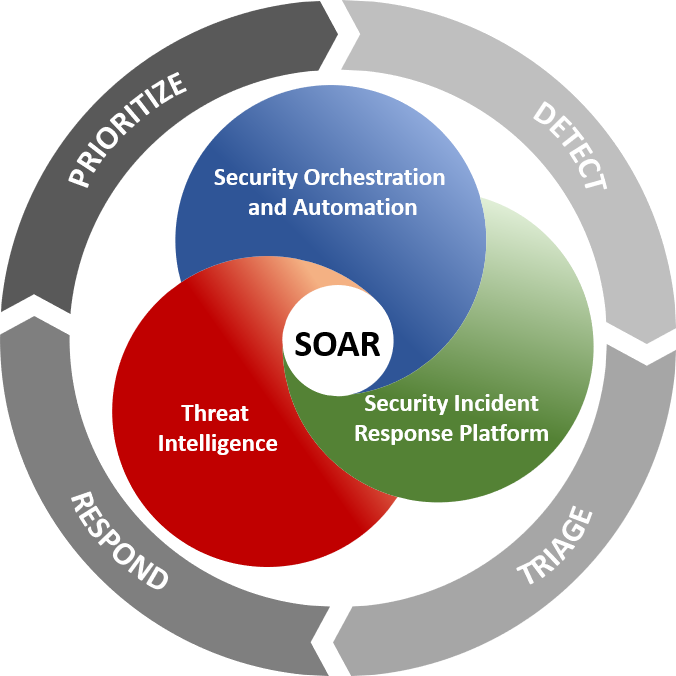
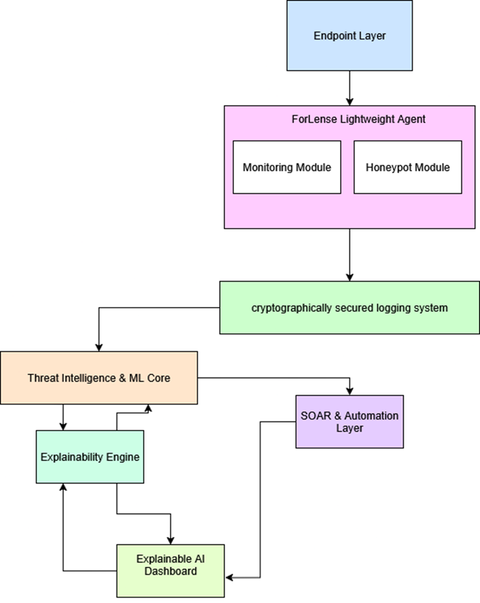
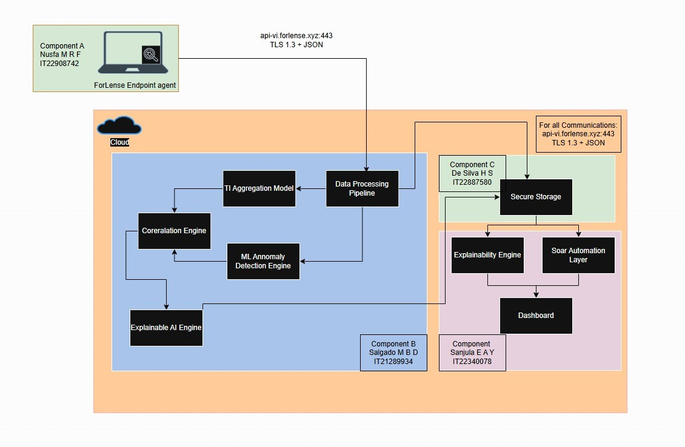
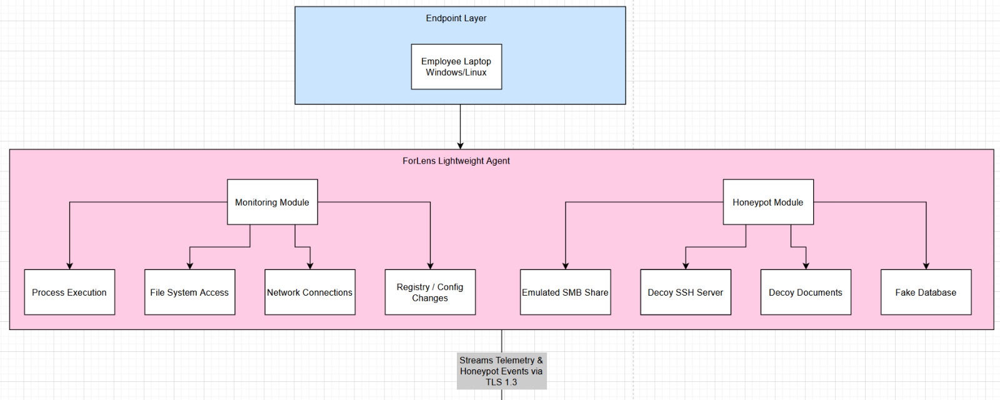
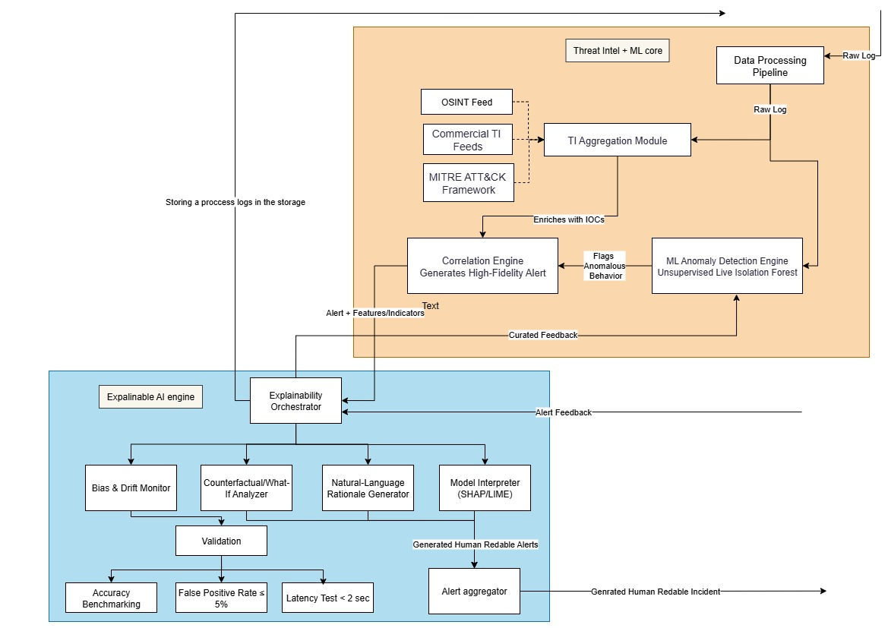
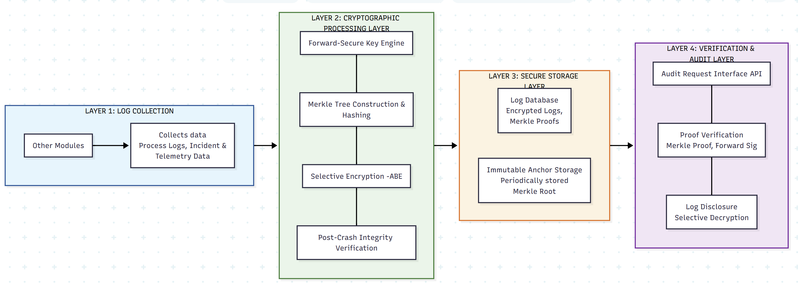
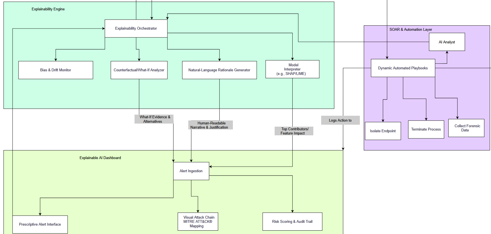

Endpoint Data Collection Agent
Separates telemetry collection from detection logic, keeping the agent lightweight while forwarding events securely to the analysis engine.
Research Domain
The domain is narrowed around SME endpoint security where users need trustworthy, readable, and actionable threat evidence without operating a full enterprise SOC.
Research Gap
Existing tools are often expensive, complex, resource-heavy, or difficult to interpret. ForLens addresses the gap with explainable insider-threat detection, endpoint-level deception, dynamic response automation, and forensic integrity.
Separates telemetry collection from detection logic, keeping the agent lightweight while forwarding events securely to the analysis engine.

Combines Isolation Forest, LSTM autoencoder concepts, threat intelligence, and MITRE mapping for context-rich anomaly scoring.
Uses tamper-evident storage concepts to make incident evidence easier to validate during response and reporting.

Supports role-aware risk scoring, admin notifications, quarantine visibility, recommended playbooks, and readable reports.
Proposal Alignment
Plug-and-play telemetry collection with less than 10% endpoint overhead target.
Isolation Forest, LSTM autoencoder concepts, and threat intelligence correlation for high-confidence alerts.
Cryptographic evidence integrity so incident records can be verified after an attack.
Role-aware risk scoring, playbooks, quarantine notifications, and readable executive reporting.
System Flow

Architecture Views
These diagrams use extracted proposal and progress-presentation visuals to show how individual components work and how they connect into the full ForLens workflow.
Endpoint telemetry, AI correlation, secure storage, explainability, SOAR automation, and dashboard reporting connected as one SME-ready workflow.

Cloud-ready processing supports secure API communication, centralized analysis, dashboard visibility, and MSP-friendly rollout.

Shows process execution, file-system access, network connections, registry/config changes, SMB decoy, SSH decoy, decoy documents, and fake database signals.

Shows raw log processing, TI aggregation, OSINT/commercial feeds, MITRE ATT&CK framework, anomaly scoring, and explainable alert generation.

Shows log collection, cryptographic processing, Merkle tree hashing, secure storage, immutable anchor storage, proof verification, and selective disclosure.

Shows explainability orchestration, SHAP/LIME-style interpretation, natural-language rationale, alert ingestion, MITRE mapping, risk scoring, and automated playbooks.